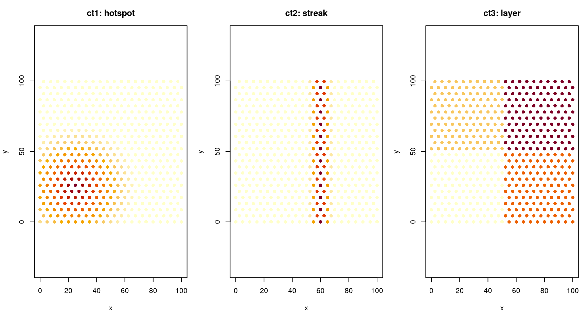
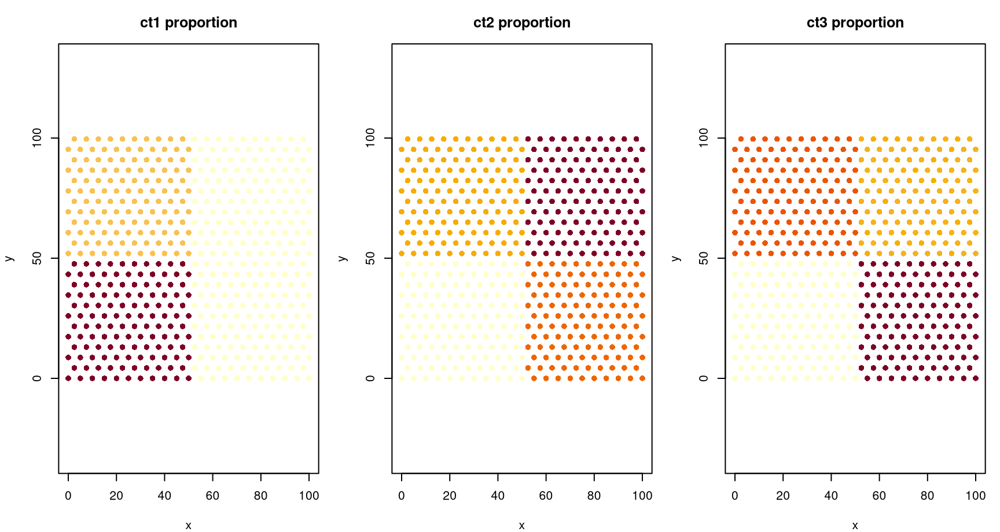
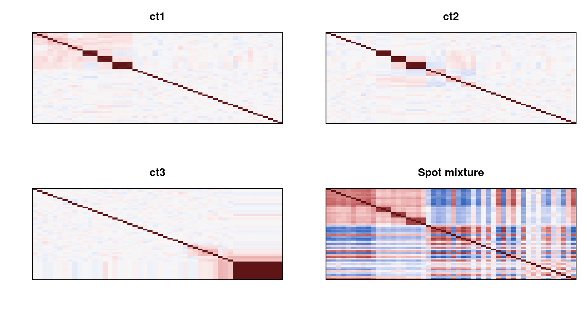

This example builds a reference-free tissue with three cell types, 150 genes, and 492 hexagonally arranged spots. It combines hotspots, streaks, layers, cell-type-specific gene modules, and spatially varying cell-type composition. Only ST-COS and base R are required.
The first 50 genes carry designed spatial signal and the remaining 100 genes have spatially constant means. The pattern assigned to each gene can differ by cell type.
set.seed(1)
n_genes <- 150
genes <- paste0("gene", seq_len(n_genes))
cell_types <- c("ct1", "ct2", "ct3")
gene_pattern <- data.frame(
ct1 = c(rep("hotspot", 10), rep("streak", 10),
rep("no_pattern", 130)),
ct2 = c(rep("no_pattern", 10), rep("streak", 10),
rep("hotspot", 10), rep("no_pattern", 120)),
ct3 = c(rep("no_pattern", 30), rep("hotspot", 10),
rep("layer", 10), rep("no_pattern", 100)),
row.names = genes
)
gene_relationship <- data.frame(
ct1 = c(rep(NA, 10), rep(1, 3), rep(2, 3), rep(3, 4), rep(NA, 130)),
ct2 = c(rep(NA, 10), rep(1, 3), rep(2, 3), rep(3, 4), rep(NA, 130)),
ct3 = c(rep(NA, 40), rep(1, 10), rep(NA, 100)),
row.names = genes
)
hotspot_centers <- list(
ct1 = data.frame(
x_coord = rep(25, 10),
y_coord = c(rep(25, 3), rep(50, 4), rep(75, 3))
),
ct2 = data.frame(
x_coord = c(rep(25, 4), rep(75, 6)),
y_coord = c(rep(75, 7), rep(25, 3))
),
ct3 = data.frame(
x_coord = c(rep(25, 3), rep(50, 4), rep(75, 3)),
y_coord = rep(75, 10)
)
)gene_relationship defines three dependence blocks for the streak genes in ct1 and ct2, and one block for the layer genes in ct3. An NA leaves a gene outside the explicitly correlated blocks.
coord <- generate_coordinates(
x_len = 100,
y_len = 100,
pattern = "hex",
spot_distance = 5
)
rownames(coord) <- paste0("spot_", seq_len(nrow(coord)))
layer_coord <- generate_layer(
coord,
xmin = c(0, 0, 50, 50),
xmax = c(50, 50, 100, 100),
ymin = c(0, 50, 0, 50),
ymax = c(50, 100, 50, 100)
)
coord_key <- paste(coord$x_coord, coord$y_coord)
layer_key <- paste(layer_coord$x_coord, layer_coord$y_coord)
layer_coord <- layer_coord[match(coord_key, layer_key), ]
rownames(layer_coord) <- rownames(coord)
cat(sprintf(
"%d spots, %d genes, %d cell types\n",
nrow(coord), n_genes, length(cell_types)
))## 492 spots, 150 genes, 3 cell typesmean_param <- generate_gene_pattern(
coord = coord,
gene_pattern = gene_pattern,
center_coord = hotspot_centers,
layer_assignments = layer_coord$layer,
layer_param = c(20, 55, 90, 130),
seed = 123
)
# Preserve the separated streak positions used in the original example.
streak_centers <- list(
ct1 = c(rep(10, 3), rep(20, 3), rep(30, 4)),
ct2 = c(rep(60, 3), rep(70, 3), rep(80, 4))
)
for (cell_type in names(streak_centers)) {
streak_genes <- which(gene_pattern[[cell_type]] == "streak")
for (i in seq_along(streak_genes)) {
mean_param[[cell_type]][, streak_genes[i]] <- generate_pattern(
coord = coord,
pattern = "streak",
streak_x = streak_centers[[cell_type]][i],
streak_x_param = 90,
background_param = 20,
streak_size = 18
)
}
}plot_field <- function(values, title) {
palette <- hcl.colors(100, "YlOrRd", rev = TRUE)
index <- cut(values, breaks = 100, include.lowest = TRUE, labels = FALSE)
plot(
coord$x_coord, coord$y_coord,
pch = 21, bg = palette[index], col = NA,
asp = 1, xlab = "x", ylab = "y", main = title
)
}
par(mfrow = c(1, 3), mar = c(4, 4, 3, 1))
plot_field(mean_param$ct1[, "gene1"], "ct1: hotspot")
plot_field(mean_param$ct2[, "gene11"], "ct2: streak")
plot_field(mean_param$ct3[, "gene45"], "ct3: layer")
set.seed(124)
cov_gene <- generate_covariance_group(gene_relationship)
cell_type_profiles <- generate_true_count(
coord = coord,
mean_param = mean_param,
gene_relationship = gene_relationship,
cov_gene = cov_gene,
theta_g = setNames(
rep(list(rep(10, n_genes)), length(cell_types)),
cell_types
),
eigen_floor = 1e-6
)
cat(
sprintf(
"%s: %d spots x %d genes",
names(cell_type_profiles),
vapply(cell_type_profiles, nrow, integer(1)),
vapply(cell_type_profiles, ncol, integer(1))
),
sep = "\n"
)## ct1: 492 spots x 150 genes
## ct2: 492 spots x 150 genes
## ct3: 492 spots x 150 genesThe covariance arrays define latent Gaussian dependence. Realized Pearson and Spearman correlations in the generated counts can be lower because the negative-binomial inverse CDF is discrete and gene marginals differ.
Each quadrant has a different expected composition. Small random variation is added within each layer, and every row is normalized to sum to one.
composition_by_layer <- data.frame(
ct1 = c(1, 1 / 3, 0, 0),
ct2 = c(0, 1 / 3, 1 / 2, 4 / 5),
ct3 = c(0, 1 / 3, 1 / 2, 1 / 5)
)
celltype_proportion <- generate_cell_prop(
layer_coord = layer_coord,
layer_param = composition_by_layer
)
rownames(celltype_proportion) <- rownames(coord)
round(head(celltype_proportion), 3)## ct1 ct2 ct3
## spot_1 1 0 0
## spot_2 1 0 0
## spot_3 1 0 0
## spot_4 1 0 0
## spot_5 1 0 0
## spot_6 1 0 0range(rowSums(celltype_proportion))## [1] 1 1par(mfrow = c(1, 3), mar = c(4, 4, 3, 1))
for (cell_type in cell_types) {
plot_field(
celltype_proportion[, cell_type],
paste(cell_type, "proportion")
)
}
spot_expression <- generate_spot_count(
true_count = cell_type_profiles,
nGenes = n_genes,
cell_number = 10,
celltype_proportion = celltype_proportion
)
dim(spot_expression)## [1] 492 150spot_expression[1:4, 1:6]## gene1 gene2 gene3 gene4 gene5 gene6
## spot_1 240.0246 380.0064 240.0169 310.0147 250.0116 190.0300
## spot_2 470.0505 320.1561 190.0825 220.1081 410.0506 250.2191
## spot_3 550.0511 410.1253 550.0583 170.0763 120.0439 170.0612
## spot_4 240.3377 270.2180 350.0727 320.1859 140.1026 280.1881Rows are spots and columns are genes. cell_number is the total cell-equivalent abundance used by the abundance-weighted spot mixture, so the resulting values need not be integers.
plot_correlation <- function(x, title) {
correlation <- cor(x[, 1:50], method = "spearman")
image(
seq_len(ncol(correlation)), seq_len(nrow(correlation)),
t(correlation[nrow(correlation):1, ]),
col = hcl.colors(101, "Blue-Red 3"), zlim = c(-1, 1),
axes = FALSE, xlab = "Genes 1-50", ylab = "Genes 1-50",
main = title
)
box()
}
par(mfrow = c(2, 2), mar = c(3, 3, 3, 1))
plot_correlation(cell_type_profiles$ct1, "ct1")
plot_correlation(cell_type_profiles$ct2, "ct2")
plot_correlation(cell_type_profiles$ct3, "ct3")
plot_correlation(spot_expression, "Spot mixture")
gene_pattern to move a hotspot, streak, or layer signal to another cell type.gene_relationship or cov_gene to create a controlled co-expression intervention.composition_by_layer with another designed or externally supplied abundance field.cell_number to vary total abundance among spots.generate_batch_count() to add dropout and sequencing-depth effects.For fitted simulations, continue to the reference-based tutorial.